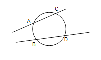

Definition: That part of a
circle
that lies between two lines that
intersect it.
Try this Drag one of the orange dots that control the
angle∠AOB.
The red arc is the arc intercepted by that angle.
When two straight lines cross a circle, the part of the circle between the
intersection
points is called the intercepted arc.
The lines intercept, or 'cut off', the arc.

Usually the two lines are the arms of an angle, as in the figure above, but this is not always the case.
For example, in the figure at right, two
secant
lines cut off, or intercept, two arcs, AB and CD.